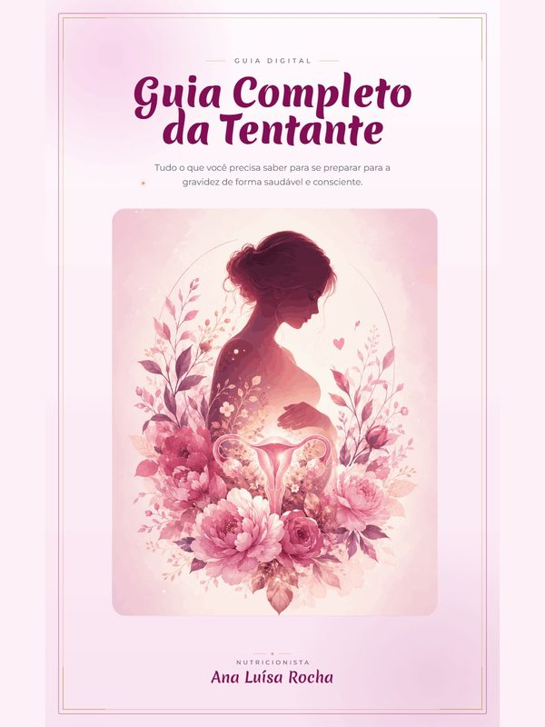
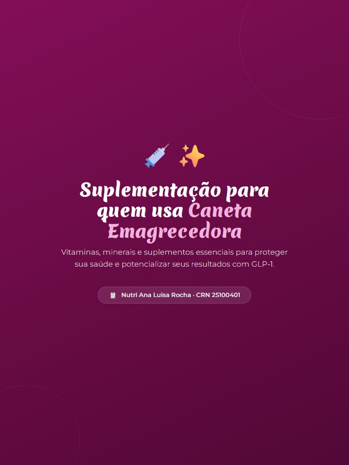
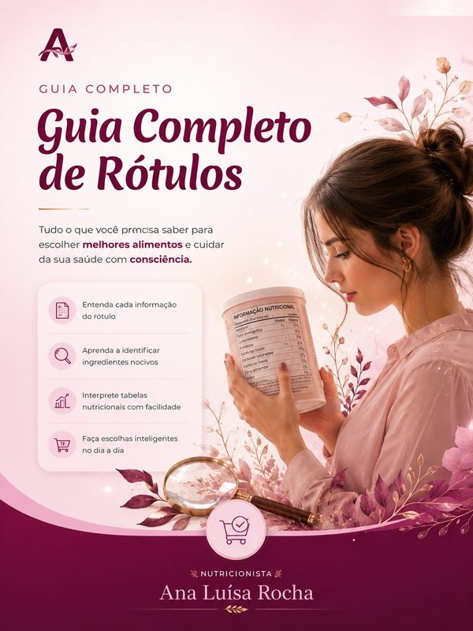
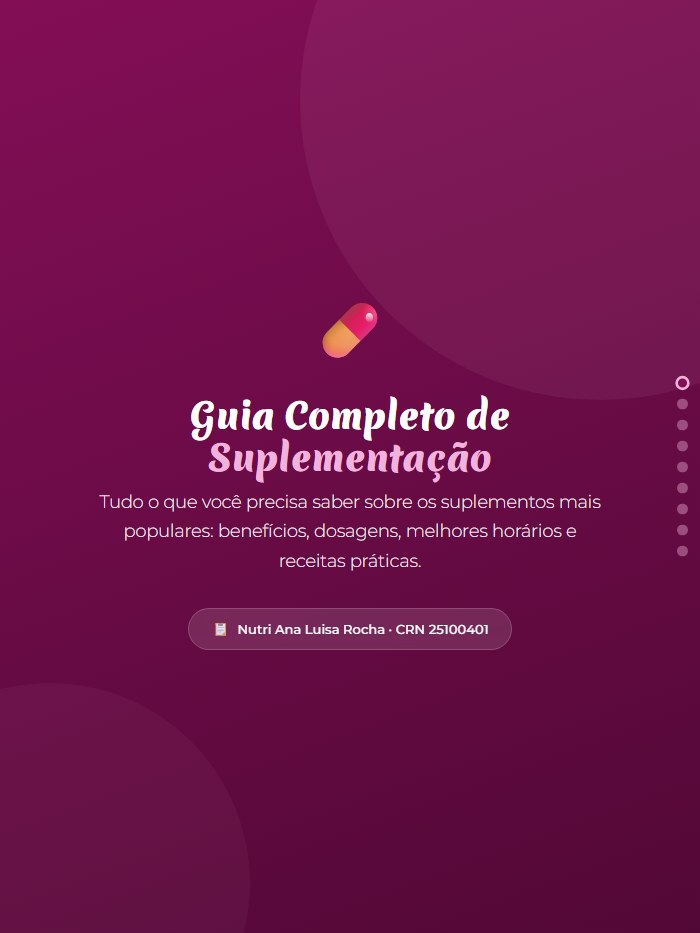

Saúde da Mulher
Um cuidado nutricional pensado para todas as fases e questões da mulher, com acolhimento, ciência e sem terrorismo alimentar.
Acompanhamento nutricional personalizado para mulheres que desejam mais saúde, equilíbrio e qualidade de vida.
Atendimento presencial e online · CRN 25100401

Cuido da mulher de forma integral — do intestino aos hormônios, do bem-estar à relação com a comida — com base científica e um plano feito só para você.
Um cuidado nutricional pensado para todas as fases e questões da mulher, com acolhimento, ciência e sem terrorismo alimentar.
Emagrecimento saudável e sustentável, no seu ritmo, sem dietas restritivas nem efeito sanfona.
Manejo nutricional da Síndrome dos Ovários Policísticos e da resistência à insulina.
Alimentação anti-inflamatória para aliviar sintomas e melhorar a qualidade de vida.
Suporte nutricional para quem convive com miomas, favorecendo o equilíbrio e o bem-estar.
Estratégias para amenizar os sintomas da TPM e viver o ciclo com mais leveza e energia.
Reequilíbrio da microbiota e do intestino, base para a imunidade, a energia e o humor.
Não sabe por onde começar? Agende uma avaliação.
Do primeiro "oi" no WhatsApp até o acompanhamento — sem surpresa nenhuma pelo caminho.
Me manda uma mensagem no WhatsApp e a gente encontra juntas o melhor dia e horário — no consultório ou por vídeo, de qualquer lugar do Brasil.
Falamos da sua história, dos seus hábitos, dos seus sintomas e dos seus exames. Depois vem a avaliação física e antropométrica — na consulta online, eu te oriento a fazer as medidas em casa, com um passo a passo simples.
O plano alimentar é montado ali, junto com você, pensado para a sua rotina. Nada de dieta pronta entregue depois — você já sai da consulta sabendo os próximos passos.
Marcamos retornos para reavaliar e ajustar o que a vida real mostrou. E entre um retorno e outro você me manda as dúvidas quando surgirem, quantas precisar.
Atendimento individualizado, com escuta de verdade e um plano construído para a sua rotina.
Para quem prefere o cuidado no consultório, com avaliação física e antropométrica completa.
A mesma qualidade de atendimento, por vídeo, de qualquer lugar do Brasil.
Plano contínuo com retornos, ajustes e suporte entre as consultas para resultados que ficam.
Se você já é minha paciente, tem uma área só sua. É por ali que você preenche a anamnese, consulta o seu plano alimentar e registra o seu dia a dia — do celular, na hora que der.
Entre com o mesmo e-mail e senha da sua conta.
Entrar na minha área →Ainda não tem acesso? Eu crio o seu depois da primeira consulta — me chame no WhatsApp.
Entre para a lista de transmissão da Nutri e receba conteúdos exclusivos direto no seu WhatsApp.
Conteúdo gratuito e sem spam. Você pode sair quando quiser. Ao continuar, você concorda com a nossa Política de Privacidade.
Você está no corredor, com o pacote na mão, sem saber se vale levar. Fotografe o rótulo — eu leio com você.
Grátis e sem cadastro. Instala pela tela inicial do celular, sem loja de aplicativos. Pacientes da Ana leem mais rótulos por dia.
Conteúdos criados por mim, com base científica, para você continuar cuidando da sua saúde além do consultório. Escolha o seu e comece agora.
📚 Já comprou? Acessar minha biblioteca → Grátis
Grátis

R$ 47 R$ 27
R$ 27
 Grátis
Grátis

Grátis
R$ 7,90 Grátis
Grátis

Grátis Material desenvolvido por nutricionista · CRN 25100401
Material desenvolvido por nutricionista · CRN 25100401
Já adquiriu um material?
📚 Acessar minha biblioteca →
Sou Ana Luísa Rocha, nutricionista clínica e hospitalar, atuando em um hospital no Rio de Janeiro. Minha paixão pela nutrição nasceu dentro de casa: acompanhei de perto a trajetória da minha mãe na luta contra a obesidade e vi como a alimentação pode transformar não apenas o corpo, mas também a saúde, a autoestima e a qualidade de vida.
Acredito que cada mulher tem uma história única e merece um cuidado individualizado, sem dietas impossíveis ou julgamentos. Meu propósito é ajudar minhas pacientes a construírem uma relação mais leve com a comida, alcançando seus objetivos de forma saudável, sustentável e respeitando sua realidade.
Relatos reais e autorizados de mulheres que cuidaram da saúde comigo.
Ela foi uma benção na minha vida e me fez perder o trauma e o ranço de dietas. Tive algumas quedas e dificuldades, mas ela sempre segurou minha mão e me ajudou — isso faz toda a diferença.
Só de ver que a nutri te olha nos olhos pra conversar, pensa no plano alimentar com carinho, demonstra interesse em como você está e tira todas as suas dúvidas... Fora que é uma pessoa super simpática!
Me sinto cada vez melhor, mais feliz e motivada! Primeiro mês da minha vida sem a temida dor de cabeça e o mal-estar. Antes eu tinha uma meta de números; hoje a minha meta é ter saúde!
Eu tinha até ranço de dieta... até conhecer a Ana Luísa. Ela foi tão solícita e amável comigo que fui seguindo sem pressão, e sigo com ela até hoje.
Relatos reais de pacientes, utilizados mediante autorização, conforme as diretrizes do Conselho Federal de Nutricionistas.
As que mais me chegam no WhatsApp antes da primeira consulta.
Atendo, de qualquer lugar do Brasil. A chamada acontece do jeito que for melhor para você: pelo vídeo do WhatsApp ou por um link que eu envio — basta um celular ou computador com internet. É a mesma escuta e a mesma profundidade da consulta presencial.
Sim. O plano alimentar é montado ali, na consulta, junto com você — e você sai com ele em mãos e com os próximos passos combinados. Na consulta online, ele chega em formato digital, sempre à mão no celular, para consultar na hora do mercado ou da refeição.
Você me manda quando surgir, quantas precisar — aquela dúvida no meio do caminho não precisa esperar o próximo retorno. Eu atendo em hospital e consultório, então nem sempre respondo na hora, mas te respondo assim que consigo.
Não. A gente acompanha a sua evolução por inteiro — energia, sono, intestino, humor, sintomas — e não só pelo número da balança.
Eu te oriento a fazer as suas próprias medidas em casa, com um passo a passo simples, para acompanharmos a sua evolução mesmo à distância.
Não é assim que eu trabalho. O cuidado é individualizado, com base científica e sem terrorismo alimentar: o plano é construído para a sua rotina e ajustado conforme o seu corpo responde e a sua vida muda. E recaída não é motivo para desistir nem para culpa — a gente entende o que aconteceu e recomeça de onde parou.
Ficou com outra dúvida? Me chame no WhatsApp.
Me chame no canal que preferir — será um prazer te atender.